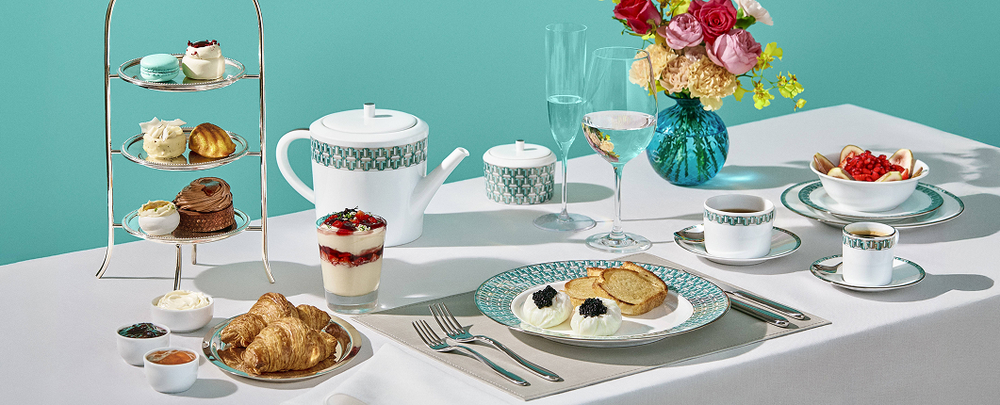
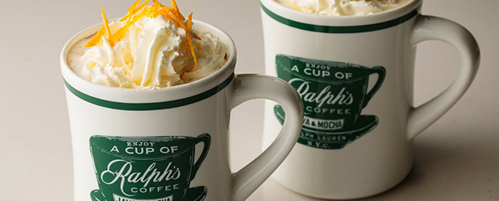
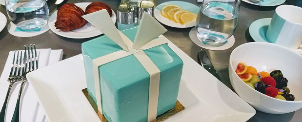
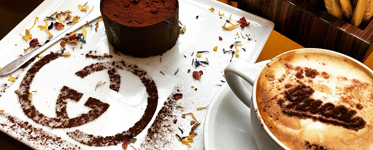
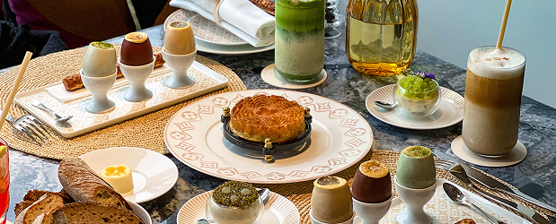

Da passarela para o paladar
Imagine-se caminhando pela Quinta Avenida em Nova York, pela Avenue Montaigne em Paris ou pela Via Monte Napoleone em Milão. Entre as vitrines exibindo bolsas de R$20 mil e sapatos que custam o preço de um carro popular, algo novo começou a aparecer nos últimos anos: cafeterias elegantes e confeitarias requintadas ostentando os mesmos logotipos das grifes ao lado.
Não, seus olhos não estão te enganando. Louis Vuitton, Dior, Gucci, Ralph Lauren e dezenas de outras marcas de luxo estão, de fato, servindo cappuccinos e bolinhos elaborados junto com suas coleções sazonais. E não se trata apenas de uma tendência passageira – é uma estratégia de negócios cuidadosamente calculada que está redefinindo o que significa ser uma marca de luxo em 2025.
Mas o que explica essa súbita paixão das grifes pelo mundo gastronômico? Por que marcas que construíram impérios vendendo moda e acessórios estão agora investindo milhões em experiências culinárias?
De Produtos para Experiências
O mercado global de experiências de luxo está crescendo 1,5 vez mais rápido que o mercado de produtos de luxo tradicionais. Diante desse cenário, as casas de moda estão mudando o foco: menos produtos, mais experiências. Esta não é uma pivotagem aleatória, mas uma resposta estratégica a mudanças fundamentais no comportamento do consumidor.
E qual experiência é mais universal, mais sensorial e mais social que a gastronomia? O café, em particular, ocupa um lugar especial nessa estratégia. Acessível mesmo para quem não pode comprar uma bolsa de R$30 mil, uma xícara de café de uma marca de luxo oferece uma porta de entrada para o universo da grife a um preço relativamente módico (embora ainda premium, claro).
Exemplos que fazem sucesso: Do croissant chanel ao cappuccino prada
Esta tendência não é apenas teórica – está se manifestando em iniciativas concretas ao redor do mundo:

Ralph lauren e seu império gastronômico
Um dos pioneiros nessa abordagem, Ralph Lauren não se contentou com uma simples cafeteria. A marca opera restaurantes completos em Nova York, Chicago, Paris, Londres e, mais recentemente, Singapura. O Ralph’s Coffee, presente em várias lojas da marca, tornou-se quase tão icônico quanto os polos listrados da grife.

Tiffany & Co. Blue Box Café
Quem não se lembra da cena de “Breakfast at Tiffany’s” com Audrey Hepburn comendo um croissant na calçada em frente à joalheria? A Tiffany transformou essa cena em realidade com seu Blue Box Café, onde os clientes podem literalmente “tomar café da manhã na Tiffany” enquanto são cercados pelo característico azul da marca.

Gucci Osteria
A Gucci elevou o conceito a outro patamar ao colaborar com o chef de três estrelas Michelin, Massimo Bottura, para criar a Gucci Osteria. Com unidades em Florença, Beverly Hills, Tóquio e Seul, estes restaurantes refinados oferecem uma experiência gastronômica que reflete a estética maximalista da marca italiana.

Louis Vuitton Café
A Louis Vuitton, não querendo ficar para trás, inaugurou cafeterias em suas lojas-conceito em Osaka, Tóquio e, mais recentemente, em Paris. O cardápio, como seria de esperar, é tão cuidadosamente elaborado quanto as coleções da marca, com doces que frequentemente reproduzem os padrões icônicos da LV.
Por Que "Bolinho e Café"? A Estratégia Por Trás da Tendência
A incursão das marcas de luxo no mercado de F&B vai muito além de diversificação de receita. Ela serve a múltiplos propósitos estratégicos:
1. Democratização Controlada do Luxo
“As cafeterias permitem que as marcas pratiquem o que chamo de ‘democratização controlada'”. De fato, um café de R$50 na Dior é muito mais acessível que uma bolsa de R$15.000, mas ainda carrega a aura da marca.
2. Tempo de Permanência Estendido
Segundo dados da consultoria McKinsey, consumidores que visitam lojas com espaços gastronômicos integrados permanecem, em média, 40% mais tempo no estabelecimento e têm 30% mais chances de realizar uma compra.
“O café cria um terceiro espaço – nem casa, nem escritório – onde o cliente pode relaxar e absorver a atmosfera da marca sem a pressão de compra imediata”, observa Claudia Silveira, especialista em varejo de luxo.
3. Conteúdo para Redes Sociais
Em um mundo onde o Instagram e o TikTok são vitrines digitais cruciais, os cafés e confeitarias de marcas de luxo são verdadeiras máquinas de geração de conteúdo. Um macaron da Ladurée com o logo da Dior ou um latte art da Fendi geram milhares de posts espontâneos.
Segundo a Influencer Marketing Hub, posts sobre experiências gastronômicas em marcas de luxo geram, em média, 60% mais engajamento que posts sobre produtos.
4. Expansão da Narrativa da Marca
“O café permite que as marcas contem histórias diferentes, mas complementares à sua narrativa principal”, explica Ricardo Ferreira, consultor de branding. “A Prada não está apenas vendendo moda; está vendendo um estilo de vida italiano, e o café é parte fundamental dessa história.”
O Brasil na Rota do "Luxo Comestível"
Esta tendência já chegou ao Brasil. Em São Paulo, a Tiffany & Co. inaugurou seu Blue Box Café no shopping JK Iguatemi, enquanto a Emporio Armani mantém um café-restaurante no Shopping Cidade Jardim.
“O mercado brasileiro tem características únicas que tornam essa estratégia particularmente eficaz”, analisa Fernanda Guimarães, consultora de luxo especializada no mercado latino-americano. “Temos uma cultura de socialização em torno do café e uma classe média-alta que, mesmo não podendo comprar produtos de luxo com frequência, busca experiências premium.”
O Futuro: Além do Café
O que começou com cafeterias simples está evoluindo rapidamente. Marcas como Versace e Bulgari já operam hotéis completos, enquanto a Porsche Design está desenvolvendo torres residenciais.
“Estamos assistindo à transformação das marcas de luxo em empresas de lifestyle completo”, prevê Alexandre Birman, CEO da Arezzo&Co. “No futuro, não será surpreendente ver consumidores vivendo em apartamentos Armani, dirigindo carros Ferrari, vestindo Gucci e, sim, tomando café da Louis Vuitton.”
Conclusão: Mais que uma Xícara de Café
A tendência das marcas de luxo investirem em “bolinho e café” é um reflexo de uma transformação mais profunda no mercado de luxo: a mudança do foco em produtos para experiências, da exclusividade rígida para a acessibilidade seletiva, do consumo ostensivo para o consumo significativo.
Para as marcas, é uma forma de expandir seu universo e criar pontos de contato mais frequentes com consumidores. Para os clientes, é uma oportunidade de saborear – literalmente – um pouco do luxo sem comprometer o orçamento de um mês inteiro.
Da próxima vez que você passar por uma dessas cafeterias elegantes, lembre-se: aquela xícara de café não é apenas uma bebida; é uma estratégia de negócios cuidadosamente elaborada, servida com um toque de espuma e, claro, um preço premium.